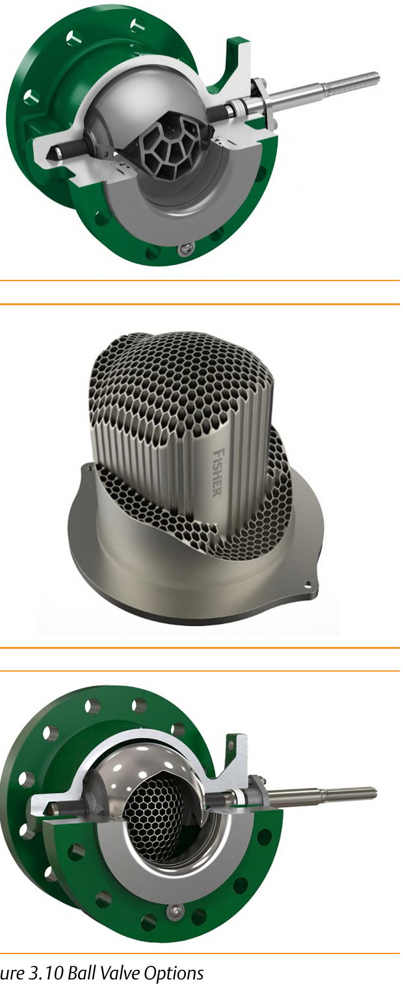
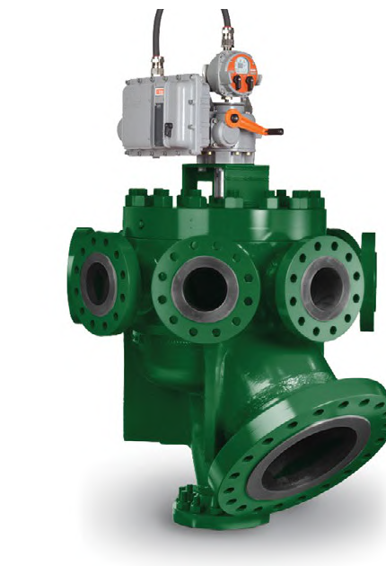
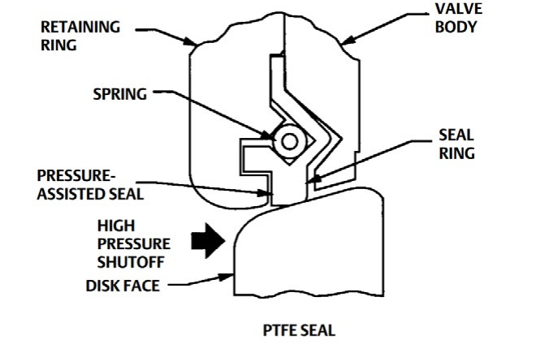

Special-Purpose Body Options

A honeycomb-style attenuator and cage trim quiet or eliminate the damage a high pressure-drop can cause — moderate noise and cavitation protection for erosive or slurry service.
Connects up to eight input lines to one common outlet through a rotating plug — isolates, diverts, or tests one line without disrupting the other seven.
Process pressure itself acts on the seal ring through the pressure-assisted seal — a bi-directional option offered on eccentric plug bodies for exceptionally tight shutoff.After Control Valve Handbook, 6th ed., Figs. 3.10, 3.16, 3.12 — used directly, Fig. 3.12's own printed labels retained. Component Index: cvh-cmp-ball-valve-cavitation-noise-options, cvh-cmp-multi-port-flow-selector-valve, cvh-cmp-pressure-assisted-seal-configuration.